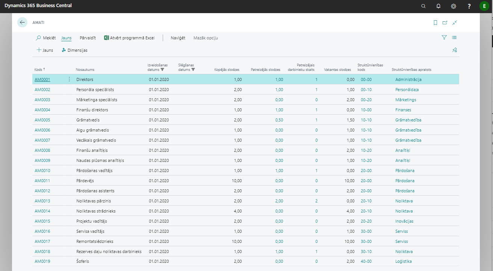
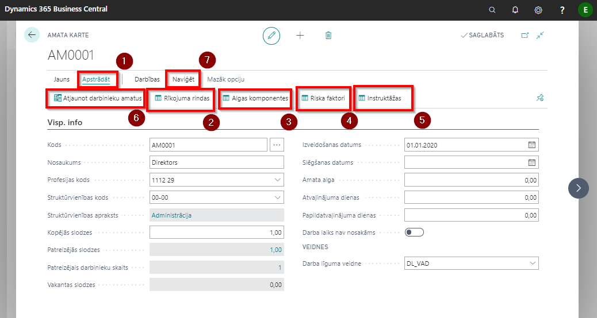

Amatu klasifikators
Sistēmā var izveidot amatu klasifikatoru, kuram var piesaistīt konkrēto profesiju klasifikatoru. Amati nav hierarhiski sagrupēti, tas ir, nav noteikta pakļautība.

Klikšķinot uz Apstrādāt  , katrai amata kartiņā var definēt atsevišķas Rīkojuma rindas
, katrai amata kartiņā var definēt atsevišķas Rīkojuma rindas  , Algas komponentes
, Algas komponentes  , identificēt amata pienākumu veikšanā Riska faktorus
, identificēt amata pienākumu veikšanā Riska faktorus  , kā arī, noteikt instruktāžas
, kā arī, noteikt instruktāžas  .
Ja sistēmā tiek labota informācija par profesijas kodu un struktūrvienības kodu, tad, lai šīs izmaiņas parādītos arī darbinieka kartiņā, amata kartē ir jāaktivizē funkcija Atjaunot darbinieku amatus
.
Ja sistēmā tiek labota informācija par profesijas kodu un struktūrvienības kodu, tad, lai šīs izmaiņas parādītos arī darbinieka kartiņā, amata kartē ir jāaktivizē funkcija Atjaunot darbinieku amatus  .
.
Amata kartiņai var piesaistīt dimensijas, klikšķinot uz Naviģēt  un izvēloties funkciju Dimensijas.
un izvēloties funkciju Dimensijas.

| Lauka nosaukums | Apraksts |
|---|---|
| Kods | Jaunās amata vietas kods. |
| Nosaukums | Amata nosaukums. |
| Profesijas kods | Kods no Darbinieku statistikas grupas. |
| Struktūrvienības kods | Kods no Struktūrvienības saraksta. |
| Struktūrvienības apraksts | Apraksts no Struktūrvienības saraksta. |
| Kopējās slodzes | Slodzes, kas ir paredzētas šim amatam kopā. |
| Patreizējās slodzes | Cik amata slodzes uzņēmumā jau ir aizņemtas. |
| Patreizējais darbinieku skaits | Darbinieku skaits, kas ir nodarbināti konkrētā amatā. |
| Vakantās slodzes | Cik slodzes vēl ir vakantas šim amatam. |
| Izveidošanas datums | Amata izveidošanas datums. |
| Slēgšanas datums | Amata slēgšanas datums. |
| Amata alga | Informatīvs lauks. |
| Atvaļinājuma dienas | Definēt, cik ikgadējā atvaļinājuma dienas pienākas šim amatam. |
| Papildatvaļinājuma dienas | Definēt, cik papildatvaļinājuma dienas pienākas šim amatam. |
| Darba laiks nav nosakāms | Atzīmē, ja amatam darba laiks nav nosakāms un tiek pakārtots uzņēmuma vajadzībām. |
| Darba līguma veidne | Var piesaistīt amatam līguma veidni. |